La fonction SI permet de renvoyer un résultat selon deux ou plusieurs conditions.
Activité 3
On demande de calculer l'appréciation d'un élève après un examen national.
Admis, si la moyenne >= 10
Refusé, si la moyenne < 10
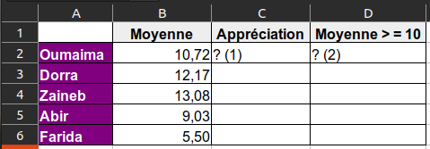
Calculer l'appréciation d'un élève en utilisant la fonction SI
(1) =SI(B2>=10;"Admis";"Refusé")
ou aussi
(1) =SI(B2<10;"Refusé";"Admis")
Activité 4
On demande de calculer l'appréciation d'un élève après un examen national en tenant compte de la possibilité
de
passage d'une session de contrôle.
Admis, si la moyenne >= 10
Contrôle, si la 9 <= moyenne < 10
Refusé, si la moyenne < 9
Activité 5
On souhaite retrouver le degré de satisfaction d'un client d'un restaurant. Les clients notent le service
d'une
façon anonyme les service du restaurant en utilisant de 0 à 5 étoiles.
On demande de :
Calculer le pourcentage de satisfaction, pourcentage de satisfaction = nombre d'étoiles * 20
Calculer le degré de satisfaction du client :
Satisfait, si le pourcentage >= 80
Insatisfait, si le pourcentage < 80
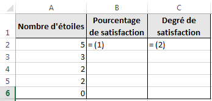
Calculer le degré de satisfaction d'un client en utilisant la fonction SI
La fonction NB.SI compte le nombre de cellules d’une plage qui répondent à un critère donné.
Activité 6
On souhaite retrouver le nombre de filles et de garçons dans un groupe d'élèves. On dispose du tableau
suivant
:
Calculer le nombre de filles et de garçons dans un groupe d'élèves en utilisant la fonction
NB.SI
(1) =NB.SI(A2:A6;"F")
(2) =NB.SI(A2:A6;"G")
Activité 7
Un développeur de circuits imprimés souhaite faire des statistiques sur le nombre de cartes développées en
fonction de leurs surface. Pour cela il a dressé le tableau suivant :
On demande de calculer le nombre de cartes de chaque catégorie.
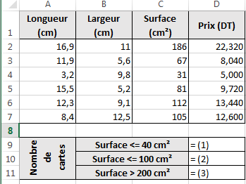
Calculer le nombre de cartes électroniques selon leurs dimensions en utilisant la fonction NB.SI
La fonction SOMME.SI permet de calculer la somme des valeurs d’une plage (plage : deux
cellules
au minimum d’une feuille de calcul. Une plage peut contenir des cellules adjacentes ou non adjacentes.) qui
répond
à un critère spécifié.
Activité 8
On demande de calculer la somme des valeurs qui sont supèrieurs ou égaux à 15. Et la somme des valeurs
inférieurs
à 15.
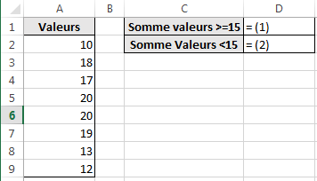
Calculer la somme d'un ensemble de valeurs selon une condition en utilisant la fonction SOMME.SI
Un drugstore dispose d'un stock de pièces de monnaie de valeur (50 Millimes) et (100 Millimes), pour compter
le
montant total de pièces il a dressé le tableau suivant dans un tableur :
Calculer le montant pour chaque type de pièce de monnaie en utilisant la fonction SOMME.SI
(1) =A2*B2
(2) =SOMME.SI(A2:A6;0,05;B2:B6)
ou
=SOMME.SI($A$2:$A$6;E2;$B$2:$B$6)
(3) =SOMME.SI(A2:A6;0,1;B2:B6)
(4) =SOMME.SI(A2:A6;0,05;C2:C6)
ou
=SOMME.SI($A$2:$A$6;E2;$C$2:$C$6)
(5) =SOMME.SI(A2:A6;0,1;C2:C6)
Fonctions utiles
Tri
L'opération de tri consiste à ordonner les éléments d'un tableau selon les valeurs d'une ou
de plusieurs colonnes en ordre croissant (du plus petit au plus grand) ou en ordre décroissant.
Activité 10
Nous souhaitons ordonner un groupe d'élève en ordre croissant de leurs noms.
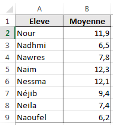
Tableau non ordonnéTableau ordonné par ordre alphabétique des noms des élèves
Procédure de tri
Sélectionner la plage de données à trier (dans l'exemple A1:B9)
Dans l'onglet Accueil, rubrique Edition, cliquer pour dérouler le menu
Sélectionner Tri personnalisé...
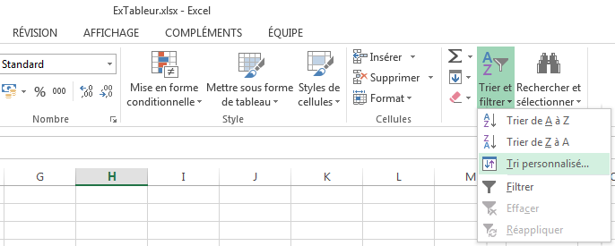
Procédure de tri, étape 2/3
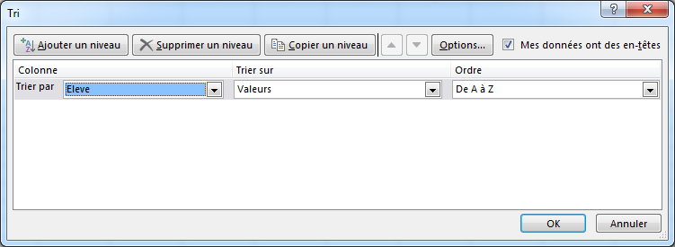
Procédure de tri, étape 3/3
Activité 11
Recopier le tableau précédent dans une nouvelle feuille, puis trier les élèves par ordre décroissant de leurs
moyennes.
Tableau initial non ordonnéTableau ordonné par ordre décroissant des moyennes des élèves
Alignement
On veut centrer le contenu d'une cellule sur plusieurs lignes, comme dans la figure qui suit.
Contenu de la cellule sans mise en formeCellule centrée sur plusieurs lignes
Procédure d'alignement sur plusieurs lignes
Sélectionner les cellules à mettre en forme
Cliquer le bouton droit de la souris, pour dérouler le menu contextuel, puis sélectionner Format
de
cellule
Ouvrir l'onglet Alignement, sélectionner Alignement du texte :
Horizontal : Centré
Vertical : Centré
Cocher la case d'option Renvoyer à la ligne automatiquement
Alignement, étape 2/4
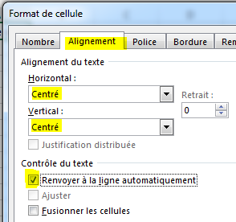
Alignement, étapes 3/4 et 4/4
Activité 12
Recopier le tableau suivant tout en respectant la mise en forme de son entête.
Calculer les montants manquants.
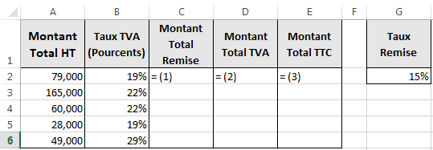
Exercice d'application sur l'alignement
Mise en forme conditionnelle
Introduction
La mise en forme conditionnelle permet de mettre en forme les cellules (Couleur, Remplissage, Bordure, etc.)
selon
une ou plusieurs critères.
Activité 13
On demande de colorier :
en rouge
les notes infèrieures à 10,
en vert
les notes supèrieures ou égales à 10.
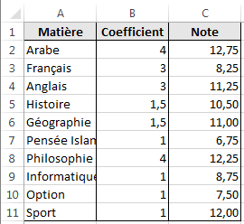
Notes de l'élève avant la mise en formeNotes de l'élève après la mise en forme conditionnelle
Procédure
Sélectionner la plage de cellules C2:C11
Dérouler le menu Mise en forme conditionnelle, cliquer la commande Gérer les règles...
Le dialogue Gestionnaire de règles de mise en forme conditionnelles apparaît sur l'écran, cliquer
le
bouton Nouvelle règle...
Le dialogue Nouvelle règle de mise en forme est affichée, sélectionner l'option Appliquer une
mise
en
forme uniquement aux cellules qui contiennent
En bas du dialogue, modifier le contenu des champs du formulaire : Valeur
de la celluleinfèrieure
à10
Cliquer sur le bouton Format... pour définir la mise en forme nécessaire,
Refaire les étapes 3, 4, 5 et 6, pour colorier en vert
les cellules dont la Valeur
de la cellulesupèrieure
ou égale à10.
Etape 2/5, dérouler le menu Mise en forme conditionnelleEtape 3/5, le dialogue Gestionnaire de règles de mise en forme conditionnelles apparaît sur
l'écran
Etape 4/7 et 5/7, le dialogue Nouvelle règle de mise en formeEtape 6/7, sélectionner le format de cellule
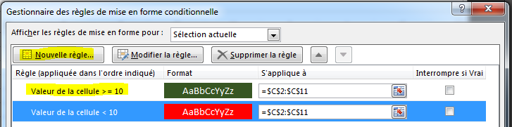
Etape 7/7, le Gestionnaire de règles de mise en forme conditionnelles contient les deux règles
souhaitées
Activité 14
Mettre en rouge les matières ayant un coefficient supérieur ou égal à 3, en
vert les matières ayant un coefficient
1,5 et en bleu les matières ayant un coefficient 1.
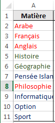
Résultat de la mise en forme conditionnelle
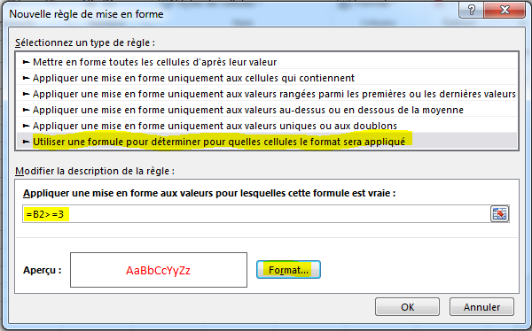
Utiliser une formule pour déterminer pour quelles cellules le format sera appliqué
L'ensemble des règles de mise en forme utilisée dans cette activité
Graphiques
Définition
Le tableur permet d'illustrer les tables de calculs par des graphiques.
Activité 15
Un magasin possédant des filiales dans plusieurs villes souhaite comparer les ventes d'un article dans ses
filiales pour les année 2016, 2017 et 2018. Pour cela, il dresse le tableau suivant :
Historique des ventes d'un article dans les magasins
Voici le résultat souhaité :
Ventes par magasinVentes par année
Procédure
Sélectionner la plage de cellules : A1:D5
Ouvrir l'onglet Insertion, dans la rubrique Graphiques cliquer l'icône
La fenêtre Insérer un graphique est affichée, sélectionner un type d'histogramme
Valider
Etape 2/4, Insertion d'un graphiqueEtape 3/4, sélection du type du graphique